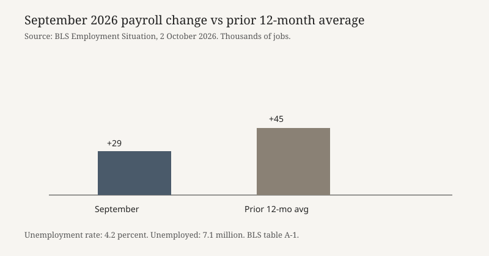

Washington · labor market · 2 October 2026
Employers added 29,000 jobs in September and the unemployment rate was 4.2 percent

What is agreed across desks
On Friday, 2 October 2026, the Bureau of Labor Statistics published The Employment Situation for September. The establishment survey showed nonfarm payroll employment up 29,000. The household survey showed an unemployment rate of 4.2 percent and 7.1 million unemployed people. BLS said both the payroll change and the unemployment rate “changed little.” The rate has sat between 4.1 and 4.3 percent since March. The prior twelve months averaged a monthly payroll gain of 45,000, so September was below that recent average and, on the wires, below the 90,000 median forecast that Reuters and Bloomberg cited before the release.
BLS said employment in all major industries changed little. Health care continued to add jobs, up 17,000, slower than its prior-twelve-month average of 33,000. Inside that line, ambulatory health care services were up 13,000 and hospitals up 12,000, while nursing and residential care facilities lost 9,000. The homepage of BLS listed average hourly earnings up 5 cents, marked preliminary. Among groups, the unemployment rate for Black workers was 7.0 percent and increased in September. Rates that BLS said showed little change were adult men 3.9 percent, adult women 3.6 percent, teenagers 14.5 percent, White workers 3.6 percent, Asian workers 2.9 percent, and Hispanic workers 4.7 percent.
Reuters reported that August payroll gains were revised downward, without restating the new August level in the short item used here. An Associated Press market story carried on ITV said August’s hiring rate had been 133,000. Those two sentences are not yet reconciled on this page: one is a direction of revision, the other is a pre-revision or post-revision level that the AP item does not label. The checkable print for September remains the BLS pair of +29,000 and 4.2 percent.
What is only a quote
Kevin Hassett, director of the White House National Economic Council, told Fox Business that he did not find the figures disappointing, “not even a little bit,” according to the New York Times live file. That is a reaction, not a second measurement of employment. Traders’ probabilities are also not a labor fact. CME Group odds cited by the AP market story put the chance of a Federal Reserve rate increase at the October meeting at 18 percent after the report, down from 64 percent a week earlier. Reuters, writing separately, said futures priced less than a one-in-five chance of an October hike, down from more than one in four, and that a December hike was still priced near 90 percent. The two market snapshots agree on direction and disagree on the exact starting odds. Neither is a vote of the Federal Open Market Committee.
Reuters also reported that the Fed raised the short-term policy rate by a quarter point last month and that policymakers had signaled another increase by year-end if inflation shocks, including the Iran war, persisted and the labor market held up. “Held up” is the condition in that signaling summary. Friday’s print is the evidence those officials said they were waiting for. It is not itself a decision to skip October.
Mechanism
The Employment Situation is two surveys released together. Payrolls come from establishments and count jobs. The unemployment rate comes from households and counts people. A small payroll gain can coexist with a slightly higher jobless rate if labor-force entry, revisions, or the two samples move differently. BLS marks the first print preliminary. Later months revise it. A miss versus a private median is a statement about forecasts, not a statement that the survey failed. The 4.1-to-4.3 band since March is the agency’s own description of a narrow range, which is why the headline verb in the release is “changed little” rather than “collapsed.”
Health care has been the main offset to flatter gains elsewhere for many months of this cycle. September continued that pattern at a slower pace, and the nursing-care decline is a subtraction inside an otherwise positive sector. Manufacturing is the disputed bright spot in secondary coverage: the Times live file said the sector added 9,000 jobs and that manufacturing employment was up 72,000 since December 2025. That sentence is not in the BLS summary paragraph used here, which said every major industry changed little. Both can be true if 9,000 is inside the “little change” threshold the agency uses for a major industry. This page treats the 9,000 and 72,000 lines as Times figures pending the BLS table, not as a second official release.
What the story is not
It is not a recession call. One month 16,000 jobs below a twelve-month average, with unemployment inside a band it has already occupied, is a cooling print, not a dating-committee decision. It is not proof the Fed will skip October; futures prices are a market, and Reuters and the AP item already differ on the prior odds. It is not a finding that any named group’s rate “surged” except where BLS itself said Black unemployment increased. It is not a verdict on the Iran war’s contribution to prices; that link appears in the Fed-signaling paraphrase, not in the payroll tables. And it is not the August revision until BLS’s own table A or the next release states the revised August level in one place.

Source articles and scores
| Outlet | Headline | T | N | C |
|---|---|---|---|---|
| Bureau of Labor Statistics | The Employment Situation — September 2026 | 98 | 0 | 100 |
| Reuters | Fed seen skipping October rate hike as job market cools | 94 | 0 | 96 |
| Associated Press | US stocks rise near their record after the latest jobs report calms the rattled bond market | 90 | 0 | 92 |
| The New York Times | Jobs Report Live Updates: Growth Cools and Unemployment Rises to 4.2% | 90 | -4 | 88 |